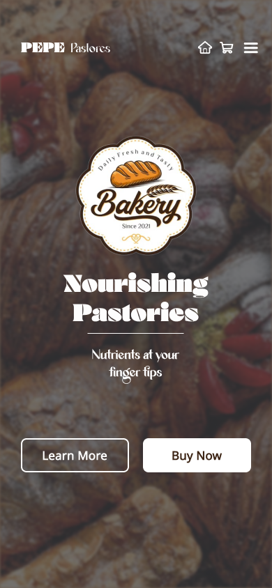
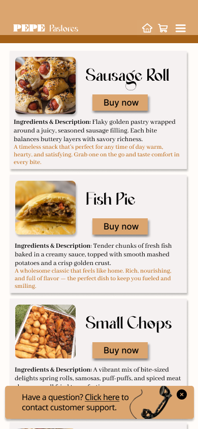
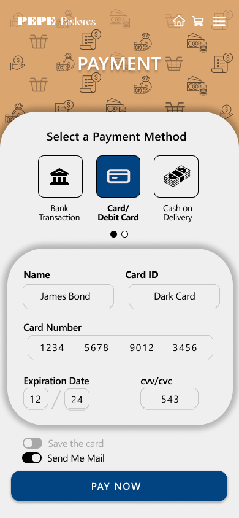
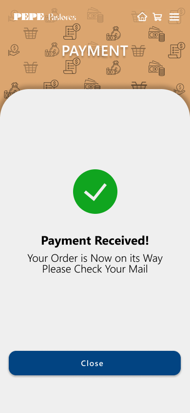
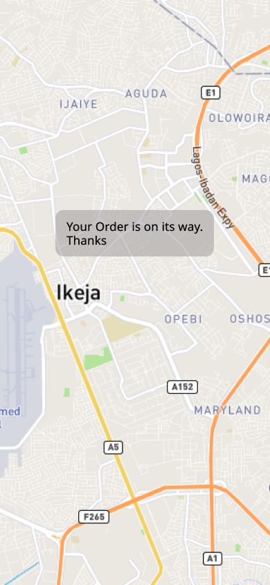
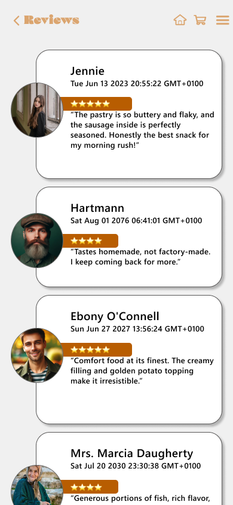
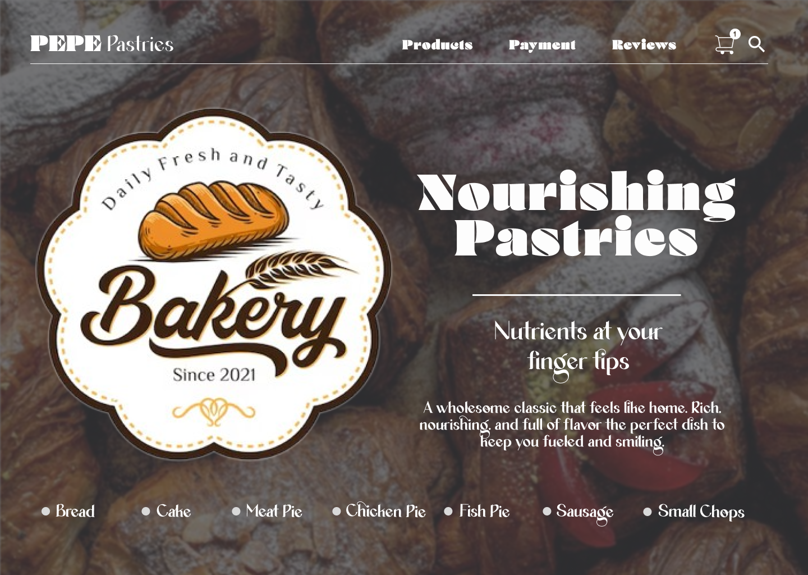
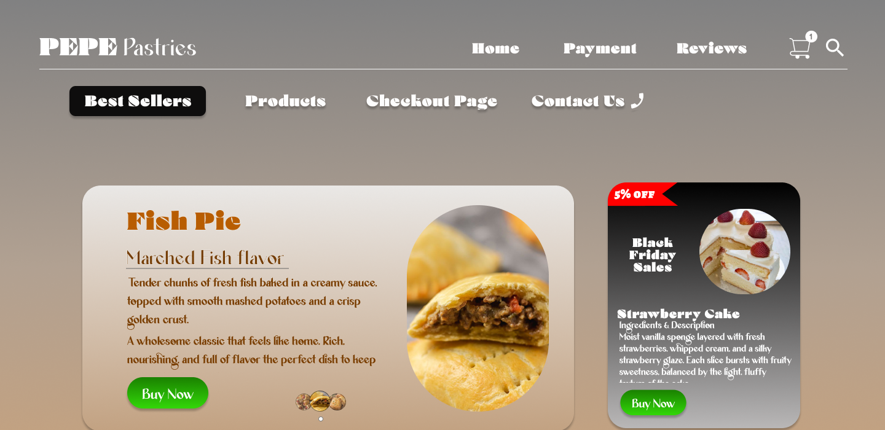
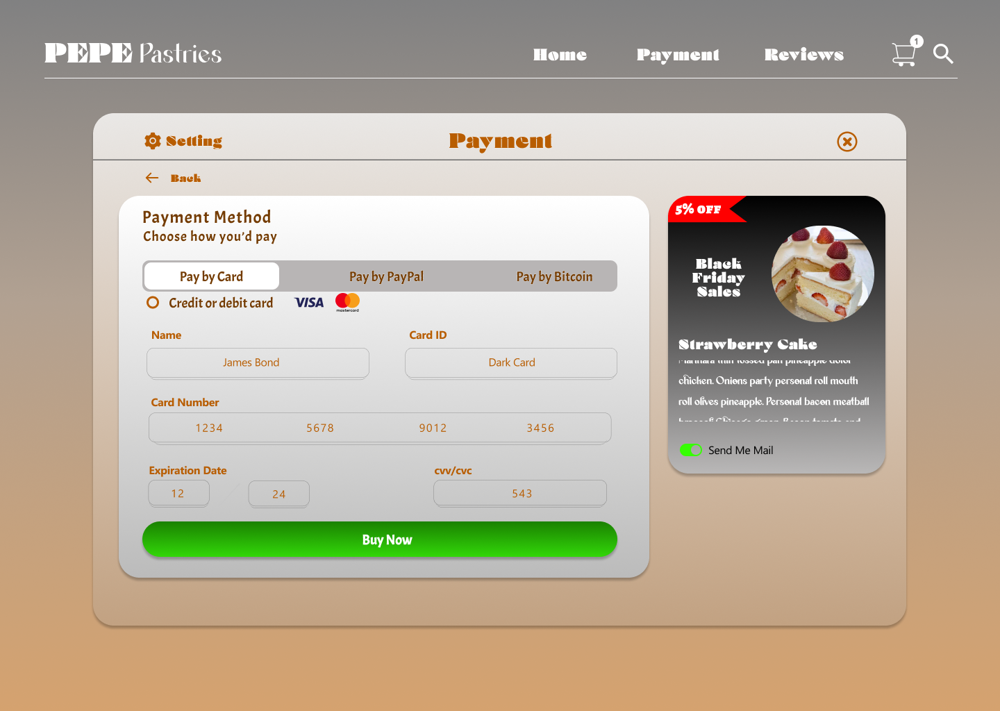

UI/UX & Product Designer — Lagos, Nigeria
Five years designing interfaces and visual identity for finance, e-commerce, and service apps — from research through to shipped, measurable results.
Selected product design work spanning fintech, e-commerce, and service platforms.
End-to-end mobile ordering experience for a bakery brand, from browsing products through checkout, payment, and live order tracking.






Desktop / Web Version



Rebuilt navigation and transaction transparency after user interviews revealed trust and clarity issues. Wireframed in low-fi, tested with 12 participants, shipped a security-forward UI.
Designed a full storefront after competitive analysis against category leaders. Focused on visual hierarchy, product grid clarity, and a trustworthy checkout flow.
Home and appointment-request flows for a vehicle service platform, designed to simplify booking and reduce back-and-forth between customers and workshops.
Core home experience for a location-based social app, designed around quick discovery and low-friction connection between users.
Map search experience prioritising speed of search and clarity of results over decorative UI, built for fast real-world use.
Public-facing site including a requisition form flow, designed for a non-technical congregation audience.
Branding, print, and social media design work.
I'm a Lagos-based UI/UX and Product Designer with five years of experience across wireframing, prototyping, and full visual identity work. I care most about the gap between a clean interface and one that actually moves a business metric — adoption, conversion, trust.
Alongside product design, I work in Adobe Creative Suite for brand and print work, and in Microsoft Power Apps / Power Automate when a project needs lightweight internal tooling rather than a customer-facing product.
BA in Philosophy, University of Lagos — which, more than anything, taught me to interrogate a problem before touching a single pixel.